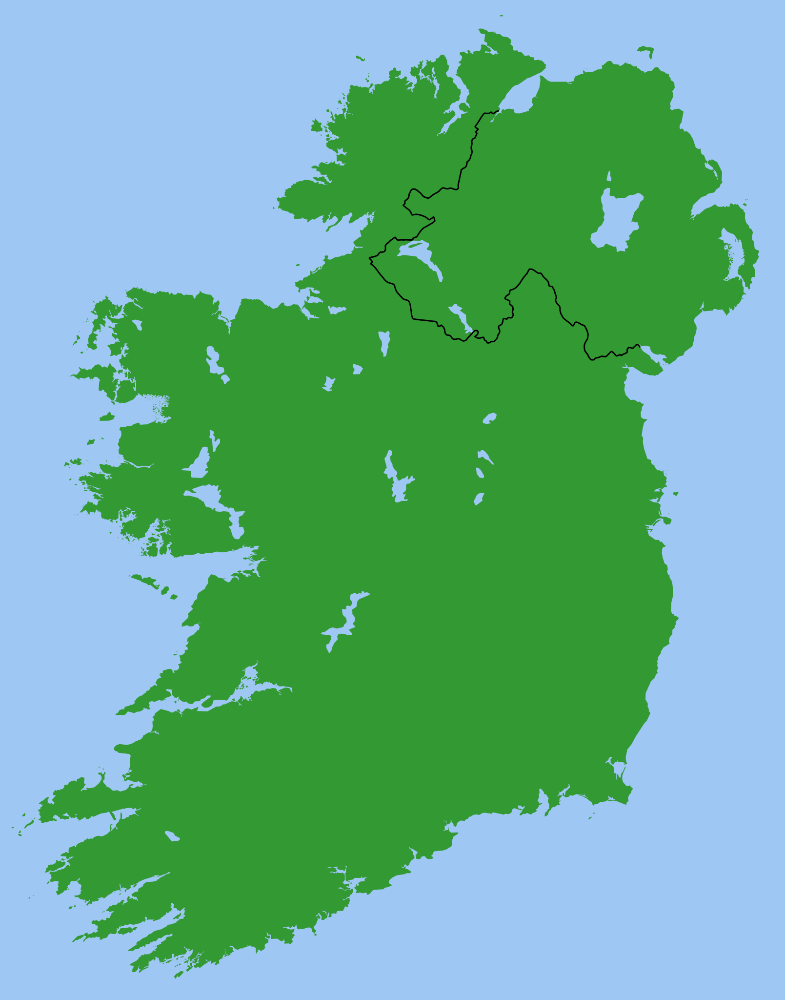

Language & exchange
Look for student, cultural, and civic encounters that make French–Irish exchange feel close to home.
Ireland's 2026 EU County Pairings
Explore the connections that bring Ireland closer to Europe — starting with Cork and France.
Explore the mapStart here
The highlighted marker is ready to explore. Other county pairings will be added as their research is verified.

AtlanticTap Cork to open its story
01
Profile available
One official county–country pairing, with many ways into the conversation.
A place to begin
Cork is officially paired with France in Ireland's 2026 EU County Pairings initiative. Use this page as a welcoming starting point: a place to notice connections, ask better questions, and help build a richer public record.
About the history: Huguenot links are a possible historical connection worth researching and sourcing further. They are not presented here as the official reason for the pairing.
Look for student, cultural, and civic encounters that make French–Irish exchange feel close to home.
Two places shaped by coastlines, ports, food, and outward-looking communities.
Trace local archives and reliable sources for stories such as Cork's Huguenot heritage.
Try the three-question quiz
Small questions, no pressure — just a quick way into Cork's European connection.
Help build the map
We welcome carefully sourced additions. A good entry starts with the evidence, not the story you hope to find.
County, country, and the initiative or source that identifies the pairing.
Link an official announcement, public body, archive, or institution where possible.
Label historical links, local stories, and interpretations clearly — and cite them.
Share a cultural, educational, civic, or community angle that can be explored responsibly.
Further verified pairings can be added to this map.